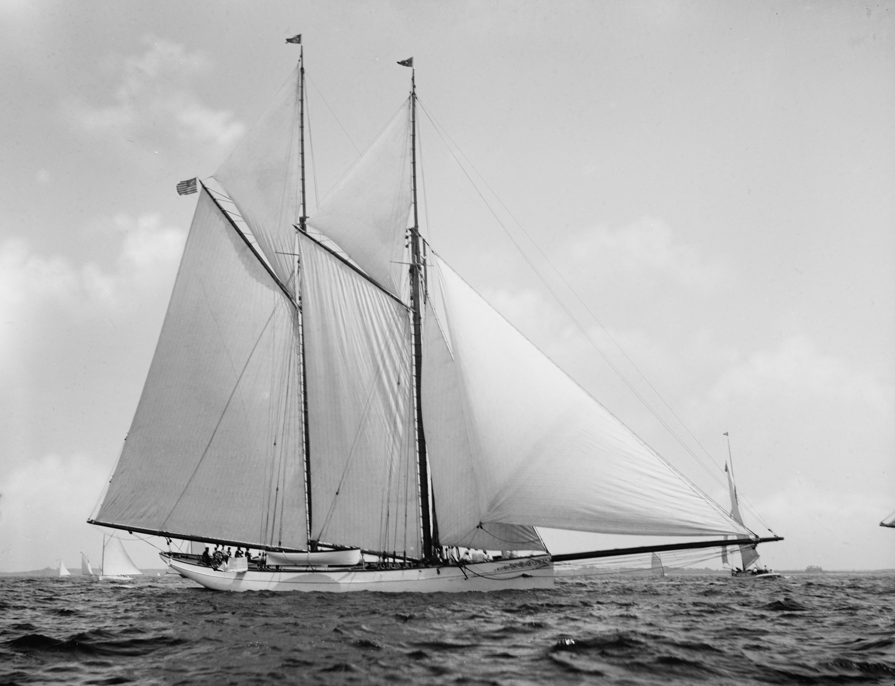

Built to order, rigged for the weather.
Artisan Technology LLC designs and builds custom software and hardware to solve problems that don't fit off-the-shelf solutions.
Software. Written for the problem at hand, from firmware to the tools people use every day.
Hardware. Devices and circuits drawn from first sketch to a working build.
Systems. Every part designed to serve the whole, and to hold up in real use.


Lindsay Moore
Principal Engineer
I'm a Design Thinker with 10+ years of experience. Really, I'm someone who's spent a decade asking "what if we did it this way?" and then building it.
I design systems, build things that matter, and bring a maker's mindset to every problem. I believe the best engineering is equal parts rigor and imagination.
From first idea to the finish line.
I like interesting questions and the full arc: idea >> prototype >> production. I imagine big, tell the story that illuminates a path, then make sure we all finish together.
| No. | Degree & institution |
|---|---|
| 1 | Master's, Computer ScienceUniversity of Chicago |
| 2 | Master's, InformaticsUniversity of Minnesota |
| 3 | Bachelor's, Production, Engineering & BusinessMcNally Smith College |
| No. | Post & organization |
|---|---|
| 1 | Board, Pumping Station: OneChicago's oldest and largest hackerspace |
| 2 | Research, STAGE CenterA multidisciplinary technology and arts lab at UChicago |
| 3 | Research, Chicago Virtual ProductionAn independent virtual production group |
Let's build something together.
Chicago, Illinois